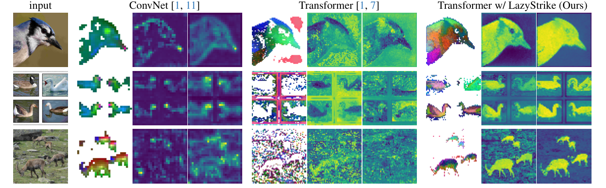
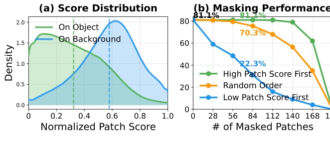
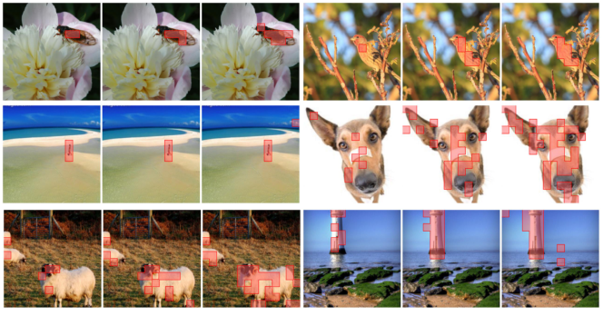

五分钟重建
图像级分类做对，不保证 patch 特征能定位前景。论文提出 lazy aggregation 假说：全局注意力会把语义传播到背景，CLS 因而可能靠背景聚合完成分类。
沿通道做滤波
对每个 patch 的特征向量做 FFT、低通滤波和 IFFT。这里的频率沿特征通道，不沿图片的横纵坐标。
计算稳定性
比较滤波前后的特征，用论文的稳定性评分选择候选 patch。它是前景的经验线索，不是前景真值。
逐通道选 Top-K
每个通道独立选分数最高的 K 个 patch，取原特征均值，组成 CLS。不同通道可以选不同区域。
具体例子（教学假设）：四个 patch 有两个通道。通道一选 patch 1、3，通道二选 patch 2、3。最终 CLS 的两个分量分别来自两组均值，而不是选一个完整 patch 充当 CLS。
边界：Top-K 的离散索引本身不可微；选中的特征值可收到梯度。频域稳定不保证就是前景，K 过小也会丢信息。Register 在该实验中未修好定位问题，不等于所有场景都无用。
先预测，再展开答案
若 K 等于全部 patch 数，选择性聚合还保留筛选作用吗？
查看机制解释
不保留。每个通道都平均全部 patch，退化为全局平均池化。FFT 和评分虽可计算，但已不能改变参与聚合的 patch 集合。
关掉提示后解释：为什么“图像看起来平滑”不能直接代替这里的“通道频域稳定”？
2026-10-04：讲解与练习待试用，本次未进行理解检验；此处不记录复测通过。
论文图解



一页看懂
02问题
ViT 当通用特征提取器时密集预测（分割/检测）不如 ConvNet：CLS 关注背景而非前景。旧解法要么治标（Register tokens，PiB 反降），要么拆东补西（窗口注意力，分类掉 8%），且没人搞清 artifact 为何产生。
方法
粗粒度监督与全局注意力是论文 lazy aggregation 假说中的两个驱动。消融支持它们共同影响该现象，不能读成所有 artifact 的必要且充分条件。
结果
PiB 42.7→55.1；CLIP 零样本分割 VOC 17.1→72.4；12 个基准一致提升且分类精度不掉。零额外参数、零额外损失。
LaSt-ViT 按特征通道的频域稳定性选择 patch 来构成 CLS，减轻背景聚合造成的定位偏差。
关键机制：懒惰聚合的两个驱动
03类比偷懒的考官：ConvNet 每个学生只能看局部，必须认真看前景才能答对（笨但靠谱）；ViT 所有人能看全图，发现背景跟类别有统计相关，集体抄背景答案，总分很高但你问哪是猫全指向背景。两个诊断工具：Patch Score（CLS 与各 patch 的余弦相似度，看 CLS 到底看哪）、PiB（最高分 patch 落在前景框内的比例，量化病情）。
粗粒度监督与全局注意力是论文 lazy aggregation 假说中的两个驱动。消融支持它们共同影响该现象，不能读成所有 artifact 的必要且充分条件。
关键机制：频域稳定性评分与 Top-K 聚合
04通道级独立选择意味着不同语义维度（颜色/纹理/形状）可以选不同前景区域。FFT 和 Top-K 都是确定性操作：零可学习参数、不改损失函数、Top-K 的离散索引不可微，已选特征值可传梯度。
为什么「频域稳定」能分前景背景：通道维频域特性，不是空间连续性。前景物体在深层特征的通道维上语义一致（低频主导，低通后变化小）；背景混杂多结构（频谱丰富，低通后能量损失大）。直觉图像：通道维低频的图 ≈ 语义分割的输出图，同一类别同一颜色。
关键数字
05| 维度 | 结果 | 附注 |
|---|---|---|
| PiB 三范式 | 全监督 42.7→55.1 / DINO 44.5→69.7 / CLIP 39.8→50.1 | 跨判别式预训练范式通用 |
| 涌现分割 | 全监督粗分割 mIoU 22.3→32.8 | 接近 DINO 自监督的 47.7，涌现属性不再自监督专属 |
| 反证 | 加 Register 后 PiB 42.7→41.5 | 不是没提升，是反降：治标不治本的实证 |
| 局限 | K 值敏感（推荐约 50% patch 数） | 风景/群体等无明确前景图、前景纹理极复杂时可能失效 |
卡壳点
06Q：懒惰聚合的两个驱动因素是什么？（Q1 漏掉的半问）
驱动1 = 粗粒度监督（只有图像级标签，没有 patch 级空间指导）；驱动2 = 全局注意力（给前景语义扩散到背景的通道）。它们是论文假说中的两个驱动，不能当作所有模型的必要且充分条件。验证：窗口注意力限制全局依赖后 PiB 升但分类掉 8%，证明全局注意力是帮凶。
Q：Register tokens 为什么没用？靠什么实验证据推翻？（Q1 漏掉的半问）
Tab.1 实测：加 Register 后 PiB 从 42.7 掉到 41.5（更差，不是"没提升"而是"反降"）。高范数只是 lazy aggregation 的晚期症状，Register 把症状挪走但病因（CLS 往背景跑）还在。
Q：频域稳定性区分前景背景的真正机制是什么？（Q2 精化）
不是"空间连续性"，而是通道维频域特性：前景物体在深层特征的通道维度上语义一致（低频主导），低通滤波后变化小；背景混杂多种结构（频谱丰富、高频多），低通后能量损失大。是深层特征的统计规律。
（2026-08-24 复测补充，复述时自生成的类比，比原文表述更直观）反向论证：空间维的低频=墙壁等平滑区域，恰恰是背景，不能当前景判据；通道维低频的直观图像 ≈ 语义分割的输出图：同一类别同一颜色，同类语义在通道维上变化小。
Q：LaSt-ViT 适用于什么预训练范式？（Q3 纠偏）
用户答"对比学习"范围窄了。LaSt-ViT 跨三种判别式预训练范式通用：标签监督（分类）、文本监督（CLIP 对比）、自监督（DINO 自蒸馏）。对比学习只是其中一种。准确叫法是"判别式预训练"（对应 GenLIP 的"生成式"）。
关联与来源
07RELATED
SOURCE
VRCS23SC / PX2ZD5PZ